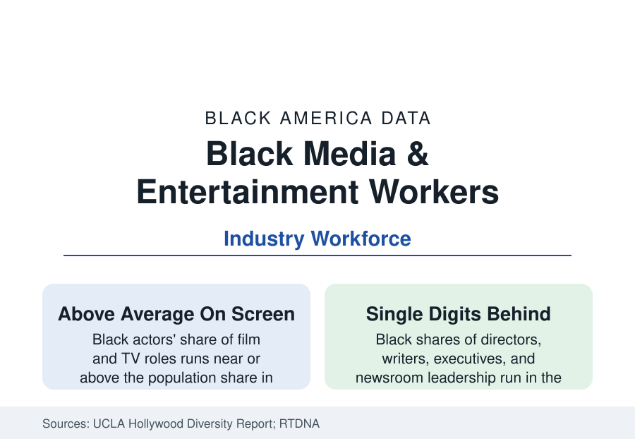

Black Employment
Black Workers in Media and Entertainment: The Visibility Paradox
Black culture drives American entertainment while Black workers hold a small share of its decision jobs. The Hollywood, newsroom, and music data.

No industry presents a wider gap between cultural centrality and occupational representation than media and entertainment. Black performers are the defining presence of American popular music, comedy, and sports broadcasting, and Black audiences over-index in viewership across the Nielsen data — while Black directors, screenwriters, studio executives, news directors, and editors-in-chief hold shares in the single digits in every industry census. This article reports the creative workforce data.
Film and Television: The UCLA Ledger
The UCLA Hollywood Diversity Report — the sector's standard annual census — has recorded the gradient for a decade in consistent terms. On screen, Black actors hold shares of film leads and overall cast roughly proportional to (in ensemble television, above) the population share. Behind the camera the shares collapse: film directors in the low double digits at the best recent counts and lower for the top-grossing slate, writers' rooms in the low teens with showrunners thinner, and the executive suites — studio heads, agency partners, network presidents — in the low single digits in the report's executive census. The Annenberg Inclusion Initiative's director data across the top-grossing films give the long view (Black directors of the annual top 100 films have run between roughly 5 and 15 percent across the series, with Black women in the low single digits), and the economics studies UCLA pairs with the census supply the industry's own rebuttal data: content with diverse casts posts the strongest median returns in their box-office analyses, season after season — the demand was never the constraint.
News: The Newsroom Counts
Journalism's diversity data run on their own long series. The newsroom surveys (the ASNE census tradition, now the News Leaders Association and RTDNA series) place Black journalists at roughly six to eight percent of newsroom workforces and lower in supervisory ranks across recent editions — against a profession whose coverage obligations run through Black America's stories daily. Local television, the most-watched news medium, records Black anchors and reporters at visible shares and news directors in the single digits in the RTDNA/Hofstra series; the newspaper industry's contraction has cut the Black journalism workforce absolutely even where shares held; and the digital-native outlets (including the Black-owned media of the business profile) rebuilt a segment of the profession on new economics. Sports journalism inverts one cell — Black reporters are a substantial presence in the NBA and NFL beats their audience knowledge commands — while sports editors remain among the whitest desks in the data.
Music and the Ownership Line
The music business is the visibility paradox at maximum amplitude: Black artists dominate the commercial center of American music (the charts' hip-hop and R&B core, the pop mainstream's Black architects), while the industry's ownership and executive layers — label heads, publishing administrators, the major agencies and promoters — record Black shares in the industry surveys that would be unrecognizable against the product. The Black Music Action Coalition's and the trade data's recent counts trace the post-2020 executive appointments and their partial rollback; the masters-and-publishing economics (the catalog-sale era's wealth events accruing substantially to non-Black rights holders of older Black catalogs) are the business section's wealth file in miniature. Live entertainment's promoter layer and the festival economy complete a picture consistent across every segment: creation integrated, capitalization not.
The Audience Data as Leverage
The demand side is the file's distinctive asset: Nielsen's Black audience research documents viewership and streaming shares well above population share across categories (Black audiences are, in Nielsen's phrase, among the most engaged media consumers in America), the social-media influence data assign Black users an outsized role in platform culture, and the advertising market prices the segment accordingly — the buying-power profile's media line. The workforce implication the diversity reports draw is mechanical: the industry's growth audiences and its product's creative core are Black to a degree its payrolls and cap tables do not reflect, and every annual census since the series began has recorded the gap narrowing at rates measured in tenths of a point.
Reading the Media Data
Media is where America sees itself, and its workforce data describe a country whose stories are disproportionately Black-created and non-Black-owned. The annual reports keep arriving with the same table in new numbers; the employment section files entertainment as the visibility paradox's permanent exhibit — proof that presence and power are different variables, measured separately.
More in Black Employment
The Black Unemployment Rate: The Two-to-One Pattern
Black unemployment runs at roughly twice the White rate — 5.5 percent against 3.3 percent in annual averages — a ratio stable across five decades of federal data. How it is measured and why it persists.
Black Median Weekly Earnings: The 80-Cent Ratio
Black full-time workers earn a median of about $900 a week — roughly 80 cents for every dollar White workers earn. The BLS earnings data by group, gender, and occupation.
Black Labor Force Participation: Working at National Rates
Black labor force participation runs at roughly the national rate — and Black women participate at higher rates than White women. The BLS participation data.
Source: UCLA Hollywood Diversity Report; Bureau of Labor Statistics; RTDNA and newsroom diversity surveys; Annenberg Inclusion Initiative; Nielsen audience data.